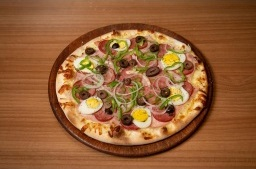

As queridinhas dos nossos clientes.

Pizza 4 queijos
jiodf apijpads pioafj diopjpiadsojfi fuaiuhudioh dfuh adh fouah iuodh afoudiho as

Pizza Boníssima
jiodf apijpads pioafj diopjpiadsojfi fuaiuhudioh dfuh adh fouah iuodh afoudiho as

Pizza Margherita
jiodf apijpads pioafj diopjpiadsojfi fuaiuhudioh dfuh adh fouah iuodh afoudiho as

Pizza Portuguesa
jiodf apijpads pioafj diopjpiadsojfi fuaiuhudioh dfuh adh fouah iuodh afoudiho as